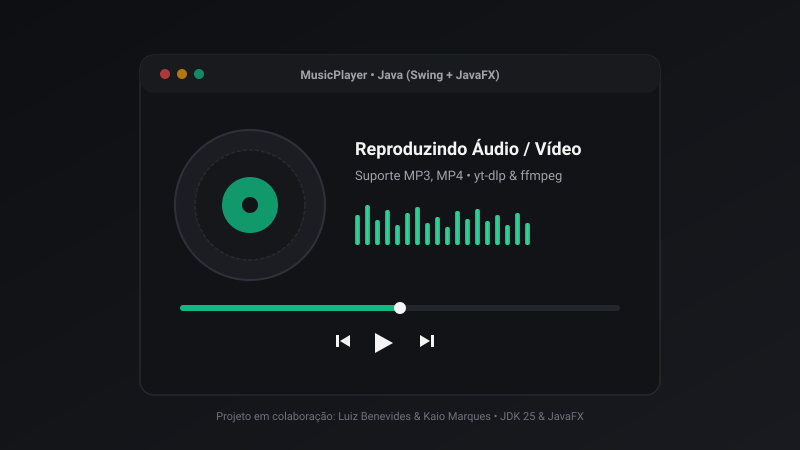
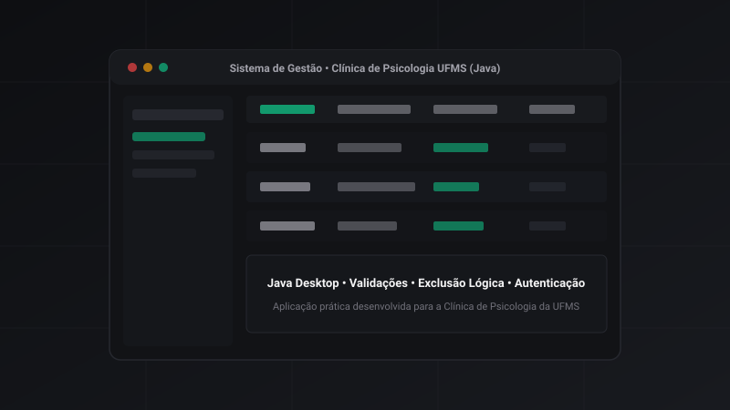
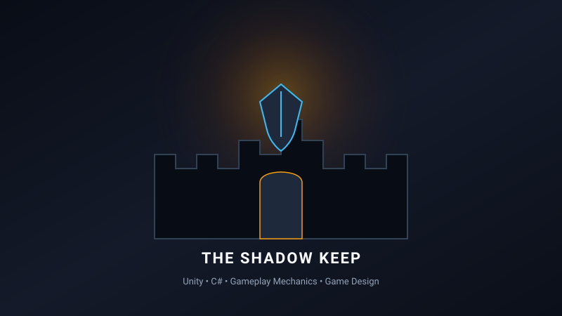
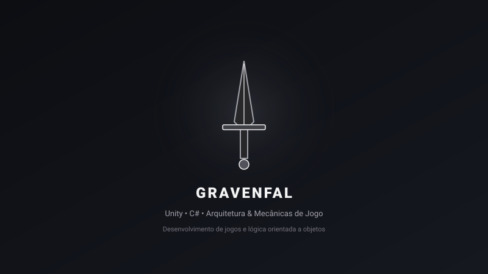
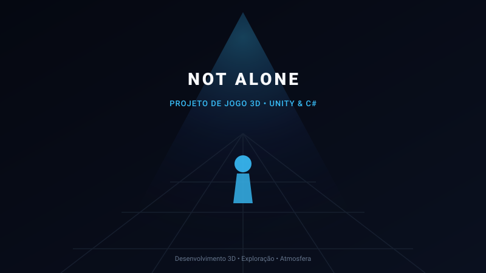
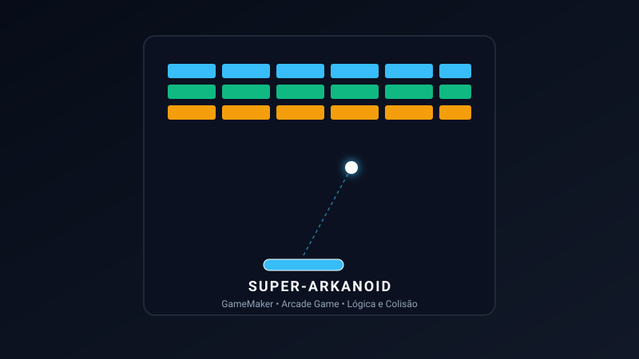

Linguagens
- Java
- C#
- JavaScript
- PHP
Desenvolvedor de Software | Estudante de Sistemas de Informação
Estudante de Sistemas de Informação na UFMS com formação técnica em Informática pelo IFMS. Foco em desenvolvimento back-end, engenharia de software e resolução de problemas estruturados.
Luiz Benevides
Desenvolvedor de Software
Sou estudante de Sistemas de Informação na Universidade Federal de Mato Grosso do Sul (UFMS), com formação técnica em Informática pelo Instituto Federal de Mato Grosso do Sul (IFMS).
Tenho grande interesse em desenvolvimento de software, com ênfase na construção de aplicações, programação back-end e resolução de problemas técnicos e de arquitetura. Possuo experiência prática com Java através do desenvolvimento de sistema para a Clínica de Psicologia da UFMS.
Também desenvolvo projetos pessoais e em colaboração utilizando Java, C#, Unity e outras tecnologias. Dedico-me a pesquisar soluções eficientes, aprender novas ferramentas e aprimorar continuamente a qualidade do código produzido.
Foco na lógica de negócios, integridade de dados e arquitetura de software.
Atuação em sistema desktop Java com refatoração, validações e controle de acesso.
Exploração contínua em mecânicas de gameplay, Unity, C# e Inteligência Artificial.
Apresentação honesta das tecnologias com as quais possuo estudo e experiência prática, sem métricas arbitrárias.
• Tecnologias com experiência prática documentada ou projetos desenvolvidos.
Atuação profissional em desenvolvimento e suporte com responsabilidades documentadas.
Clínica de Psicologia da UFMS
Atuação no desenvolvimento e manutenção de aplicação desktop em Java, com relatório formal de atividades comprobatório.
Embrapa — Núcleo de Tecnologia da Informação (NTI)
Atuação em suporte técnico e helpdesk, prestando apoio à equipe de TI. Atividades relacionadas à manutenção de equipamentos de informática e infraestrutura de suporte elétrico (no-breaks / UPS).
Projetos práticos, colaborativos e acadêmicos desenvolvidos com diferentes tecnologias.

Player de áudio e vídeo desktop moderno desenvolvido em Java (Swing + JavaFX). Suporta reprodução de arquivos .mp3 e .mp4, visualização dinâmica e integração de download e conversão com yt-dlp e ffmpeg. Desenvolvido em colaboração com Kaio Marques.

Aplicação desktop desenvolvida em Java para gerenciamento de prontuários e consultas de clínica-escola. Inclui controle de registros, validações, autenticação, níveis de acesso e manutenção com exclusão lógica.

Projeto de desenvolvimento de jogo em Unity e C#, envolvendo programação orientada a objetos, mecânicas de gameplay, combate e conceitos fundamentais de Game Design.

Projeto de desenvolvimento de jogo em Unity e C#, trabalhando arquitetura limpa de componentes, movimentação e lógica orientada a objetos.

Projeto de desenvolvimento de jogo 3D em Unity e C#, com ambientação de suspense/horror, exploração espacial, iluminação dinâmica e interação tridimensional.

Projeto de jogo inspirado no gênero clássico arcade, desenvolvido em GameMaker, trabalhando física de colisões, controle de pontuação e progressão de fases.
Universidade Federal de Mato Grosso do Sul (UFMS)
Formação superior abrangendo engenharia de software, modelagem de bancos de dados relacionais, estrutura de dados, redes e arquitetura de sistemas.
Instituto Federal de Mato Grosso do Sul (IFMS)
Formação técnica profissionalizante com foco em lógica de programação, fundamentos de hardware, desenvolvimento web e suporte computacional.
Aberto a oportunidades de estágio e início de carreira na área de tecnologia (remoto).